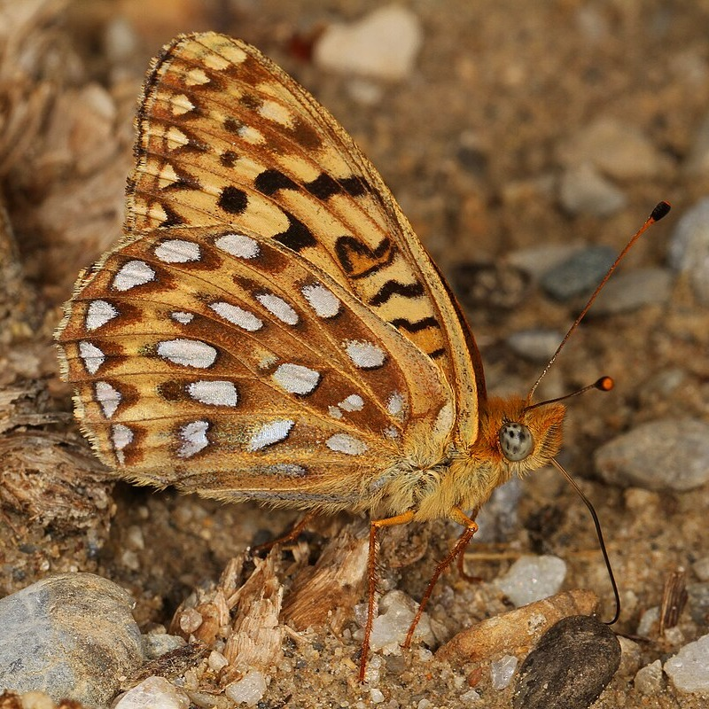
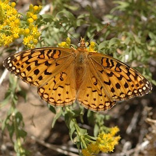
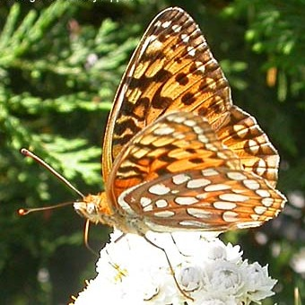
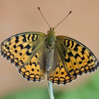

Male, Ventral Side 
Male, Dorsal Side

Female, Ventral Side

Male, Dorsal Side
Argynnis coronis
(was Speyeria)
- Common name
- Coronis Fritillary
- Family
- Nymphalidae
- Family common name
- Brush-footed butterflies
- On the wing
- E May to M October, peak in June - August
1 generation
- Habitat
- Moist openings in mountain forest, chaparral, and sagebrush and other brushy habitats.
- Larval host:
- Violets.
- Nectars on:
- Bull thistle and other composites, chokecherry.
- Abundance
- C
Range Map
Seasonality